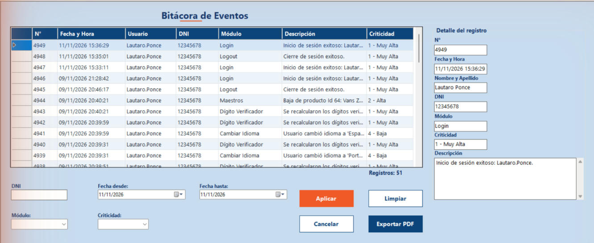

Inicio › Administrador › Bitácora de eventos
Bitácora de eventos
El sistema anota solo cada acción importante (ingresos, cambios de datos, bajas, respaldos...) con quién la hizo y cuándo. Acá las revisás, las filtrás por DNI, módulo, criticidad o fechas, y podés sacar un PDF.
Dónde está: Administrador › Bitácora de eventosLo usa: AdministradorAtajo: F1
Pasá el mouse por encima de cualquier botón o campo de la pantalla para ver qué hace.

Qué hace cada elemento
- 1Registros de la bitácoraCada fila es un evento: número, fecha y hora, usuario, DNI, módulo donde ocurrió, descripción y criticidad. Los más nuevos aparecen primero. Tocá una fila para ver todo su detalle a la derecha.
- 2Total de registrosCuántos registros se están mostrando con los filtros actuales.
- 3DNIPara ver solo lo que hizo una persona, escribí su DNI.
- 4Fecha desdePrimer día del período que querés ver. Se incluye completo.
- 5Fecha hastaÚltimo día del período. Se incluye hasta las 23:59 de ese día.
- 6MóduloFiltra por la parte del sistema donde pasó el evento: Login, Logout, Cambiar contraseña, Gestión de usuarios, perfiles, familias o respaldos, Ventas, Compras, Maestros, Dígito verificador o Cambiar idioma.
- 7CriticidadFiltra por qué tan importante es el evento, de 1 (Muy alta) a 5 (Muy baja).
- 8AplicarBusca los registros que cumplen todos los filtros que completaste.
- 9LimpiarBorra todos los filtros y vuelve a mostrar la bitácora completa.
- 10Cancelar / SalirMientras hay filtros aplicados se llama Cancelar y los deshace. Cuando no hay filtros pasa a llamarse Salir y cierra la pantalla.
- 11Exportar PDFGuarda en un archivo PDF los registros que estás viendo, listo para imprimir o archivar.
- 12Detalle del registroMuestra completo el registro elegido en la grilla: número, fecha y hora, nombre y apellido, DNI, módulo, criticidad y la descripción entera, que en la grilla puede verse cortada.
Cómo hacerlo
- Escribí el DNI de la persona.
- Si querés acotar el período, elegí Fecha desde y Fecha hasta.
- Tocá Aplicar.
- Tocá una fila para leer la descripción completa en el panel de la derecha.
Tené en cuenta: Las fechas por defecto son las de hoy: si querés ver días anteriores, cambialas antes de tocar Aplicar.
- Abrí Criticidad y elegí 1 - Muy Alta (o el nivel que busques).
- Si querés, sumá un módulo.
- Tocá Aplicar.
- Filtrá lo que necesites (o dejá todo sin filtrar).
- Tocá Exportar PDF.
- Elegí la carpeta y el nombre del archivo. Por defecto propone Bitacora_fecha_hora.pdf.
- Tocá Guardar. El sistema avisa con la ubicación del archivo.
Tené en cuenta: El PDF incluye exactamente los registros que ves en pantalla, con la fecha de generación y el usuario que lo exportó.
- Tocá Limpiar o Cancelar. Los filtros se borran y vuelve la lista completa.
Para saber más
Mensajes que puede mostrar el sistema 5
| Mensaje | Qué significa y qué hacer |
|---|---|
| AvisoLa fecha desde no puede ser mayor a la fecha hasta. | Invertiste el rango. Poné primero la fecha más antigua. |
| AvisoNo se encontraron registros con los filtros aplicados. | Ningún evento cumple esos filtros. Probá ampliar las fechas o sacar algún filtro. |
| AvisoNo hay registros para exportar. | La grilla está vacía, no hay nada para llevar al PDF. |
| ListoPDF exportado correctamente: (ruta del archivo) | El archivo ya está guardado en la carpeta que elegiste. |
| ErrorError al exportar PDF: (motivo) | No se pudo escribir el archivo. Suele pasar si el PDF está abierto en otro programa o la carpeta no permite guardar. Cerralo o elegí otra carpeta. |
Reglas a tener en cuenta 5
- La bitácora es solo de consulta: no se pueden editar ni borrar registros desde acá.
- Los filtros se combinan: se muestran los registros que cumplen todos a la vez.
- Criticidad: 1 Muy alta, 2 Alta, 3 Media, 4 Baja, 5 Muy baja. Las más altas son las que más importan (por ejemplo inicios de sesión, bloqueos o errores de integridad).
- El sistema registra automáticamente: ingresos y salidas, cambios de contraseña e idioma, altas, bajas y modificaciones de usuarios, perfiles, familias y productos, compras, ventas, respaldos y recálculos del dígito verificador.
- Cada registro lleva un dígito verificador: si alguien altera la base de datos por fuera del sistema, el control de integridad lo detecta (ver Reparación de la base de datos).
Temas relacionados
SneakRush · Ayuda del sistema · Bitácora de eventos. Podés abrir esta ayuda desde cualquier pantalla con la tecla F1.